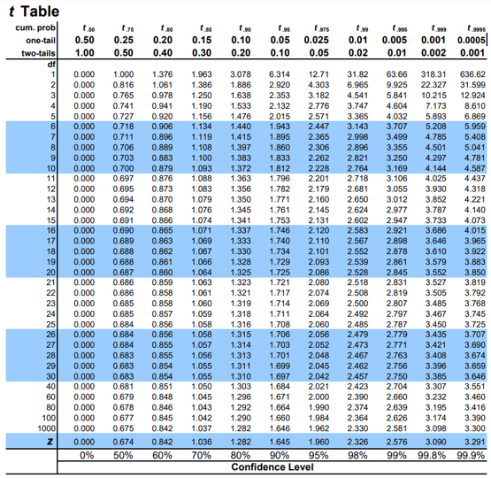

## Week 3
### T-tests and degrees of freedom
---
### So far:
- Null hypothesis & alternative hypothesis
- Normal distribution
- Mean and s.d.
- SEM and CI
Type I and Type II errors
Four possible outcomes of null hypothesis testing
|
our decision |
| H0 is NOT rejected |
H0 is rejected |
| the null hypothesis is really... |
true |
correct |
Type I error (false positive) |
| false |
Type II error (false negative) |
correct |
Example: Covid tests
- What's the null hypothesis?
- Person doesn't have Covid
- What's the alternative hypothesis?
- Two ways to go wrong
- Test says positive when the person doesn't have Covid (Type I, false positive)
- Test says negative when the person has Covid (Type II, false negative)
One sample t-test
The one sample t-test: is an unknown population mean different from a specific value?
- Example: The average IQ is 100, by design. A professor wants to know whether the average IQ of students from university A is different from 100.
- here, population = where we collect data = university A
When to use the one sample t-test
- To compare a group of scores to a specified constant.
- Scale variables (interval or ratio scores).
- Population and sample are normally distributed.
One sample t-test example
Test whether students from university A have an average IQ which differ from 100.
- Twenty students randomly selected from university A took the IQ test.
- The IQ scores: 117 125 116 113 102 122 123 93 99 129 132 94 85 92 101 83 119 119 101 97 (mean = 108.1)
- Null hypothesis: no difference between sample mean and 100. (i.e. H0: µ=100)
- Alternative hypothesis: there is a difference between sample mean and 100. (i.e. H1: µ≠100)
How to test: the standard error of the mean
How confident are we that 108.1 represent the average IQ of all students from uni A (population mean)?
The standard error of the mean (SEM)
Imagine picking out 20 students randomly from uni A and calculating their mean
- The value of the mean is likely to be different every time
- Now do this 100 times, and construct a histogram of the mean value
- The standard deviation of this distribution is the SEM
An animation: Sampling Distributions
Calculating the SEM from one experiment
One sample t-test: How many SEM units is our estimate from 100?
\[ t = \frac{\bar{x}-\mu}{SEM} \]
where
- t is the value of the one-sample t—test
- x bar is the mean of the sample (here 108.1)
- μ is the number to be compared with (hypothetical mean*) (here, 100)
- SEM is the standard error of the mean (here, 3.37)
- so t = 2.4, in other words, our sample is 2.4 SEM units from the hypothetical mean.
Is 2.4 units good enough?

Is 2.4 units good enough?
- Manually: consult the t table based on the degree of freedom (d.f. = n-1 = 20-1 = 19).
- At alpha = 0.05, our t value is greater than the critical t value (2.4 > 2.093).
- Thus, we reject H0, and say that uni A's students have significantly different IQ than 100. (And because 108.1 > 100, we say it's higher than 100.)
Do it in R
1. Prepare data
2. Test for normality
a = c(117, 125, 116, 113, 102, 122, 123, 93, 99, 129, 132, 94, 85, 92, 101, 83, 119, 119, 101, 97)
shapiro.test(a)
> shapiro.test(a)
Shapiro-Wilk normality test
data: a
W = 0.94113, p-value = 0.2518
p > 0.05 means data is not significantly different from normal distribution, which is what we want.
3. Run the test
t.test(a, mu=100)
> t.test(a, mu=100)
One Sample t-test
data: a
t = 2.4063, df = 19, p-value = 0.02646
alternative hypothesis: true mean is not equal to 100
95 percent confidence interval:
101.0545 115.1455
sample estimates:
mean of x
108.1
Reporting statistics
Statistical tests need to be reported once the data have been analysed (usually in a short paragraph)
Basic framework for the reporting:
- Statistical test that was performed
- The measures that were compared (with the different levels if there are any)
- The means and standard deviations
- Significant or non-significant?
- Specific test value – in this case the t-statistic (in later weeks, the F-value, X², r)
- Degrees of freedom – convention dictates that these are placed in rounded parentheses
- The specific p-value taken from R
- (confidence intervals/effect size)
Reporting statistics – One Sample t-Test
A one-sample t-test was run to determine whether the mean IQ scores for students in university A (n=20) was different from the average IQ (µ=100). Sampled IQ scores were normally distributed as assessed by Shapiro-Wilk’s test (p= 0.25) and there were no outliers in the data. The group of 20 students were found to have a significantly higher IQ (M=108.1, s.d.=15.05) than the average, t(19) = 2.4, p < 0.03.
Moving on to comparing the mean of two groups…
Examples:
- do students from uni A have higher IQ than students from uni B?
- did a group of students’ test score improve after training?
- is there a difference between two dialectic groups in their perception of a certain speech sound?
- do people spend more time reading garden-path sentences than ordinary sentences?